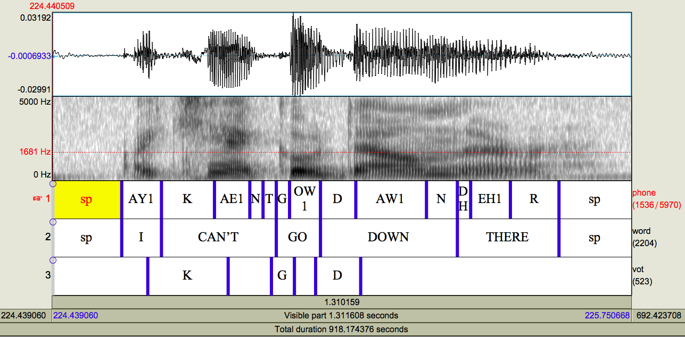

sudo easy_install pip
sudo pip install --upgrade pipAutoVOT
Overview
What does AutoVOT do? AutoVOT takes a sound file and Praat TextGrid marked with the locations of word-initial, prevocalic stop consonants and creates a new tier with boundaries marking the stop consonant burst release and following vocalic onset. With these boundaries, positive VOT can be measured efficiently using a standard acoustic analysis program such as Praat.
What does it include? AutoVOT can be used via Praat directly or via the command line. The system comes with pre-trained acoustic models/classifiers for American English and British English word-initial, prevocalic VOTs. It also offers the option to train your own acoustic models from labeled training data.
As the online tutorial is extremely helpful, I will just offer a few tips from experience. You will first need to visit the online tutorial for the prerequisites and basic installation.
Online tutorial and download: https://github.com/mlml/autovot/
Do follow the command line installation instructions closely. Note that there are several dependencies that you might have to download separately. Make sure to do this!
I was able to follow their instructions up until the pip -r "requirements.txt" command. I did not have pip installed on my computer, so I needed to install that separately. You might also run into this with pip and possibly also git. At least for pip, I solved the problem in the following way:
First: install pip by typing the following into the command line (must be connected to the internet).
Second: even after installing pip, I had trouble running their command of pip -r "requirements.txt", so I installed each package separately in the following way. These should again be typed into the command line (bash).
pip install numpy
pip install future
pip install scipy
pip install textgrid
pip install argparseSimple recipe
To run AutoVOT, you will need the following:
- a TextGrid with an interval tier for the VOT “windows of analysis”
- corresponding 16kHz mono wav file
- a text file containing the names and locations (the path) for the TextGrids to be processed
- a text file containing the names and locations (the path) for the wav files to be processed
The TextGrid should contain at least one tier with an interval for every VOT to be processed. If you would like to run AutoVOT in one go, the label of the intervals to be processed should be the same (e.g., “vot” or “stop”). If you would like to run AutoVOT separately for each stop consonant (e.g., once for “p”, once for “t”, and once for “k”; there are good reasons for doing this), then see the full recipe below.
The windows of analysis are the intervals surrounding the word-initial stop consonant that AutoVOT should process. You should make sure that the analysis window provides enough space before the start and after the end for the system to be able to identify the stop release (or burst) and the onset of voicing in the following segment.)
As mentioned in the list above, the wav file needs to have a sampling rate of 16 kHz and single channel.
The text files containing the paths and filenames to the TextGrids and wav files to be processed can be created manually or automatically. If you’d like to create them automatically, see step 4 in the Full Recipe section. The TextGrids and wav files need to be in the same order, and each filename needs to be on its own line. These two files need to be placed in ~/autovot/experiments/config/.
Once you’ve set up your TextGrids, wav files, and have created the lists of the filenames + paths, you should be ready to run AutoVOT. Before you run AutoVOT, make sure to navigate to the experiments folder and set the path to your autovot/autovot/bin folder.
You’ll then run auto_vot_decode.py from the experiments folder with the following arguments:
- –window_tier name of the tier with your vot windows
- –window_mark name of the label in your vot window intervals
- –min_vot_length minimum vot length allowed in milliseconds
- location of your list of wav files
- location of your list of TextGrids
- name of model (I typically use the model I specified below which is also located in your
autovot/autovot/bin/models/folder)
Example code for a voiceless stop (periodic reminder that backslashes shouldn’t be copied; these are just there as line breaks):
cd experiments
export PATH=$PATH:/Users/Eleanor/autovot/autovot/bin
auto_vot_decode.py --window_tier vot --window_mark P --min_vot_length 15 \
config/ListWavFiles.txt config/ListTextGrids.txt \
/Users/Eleanor/autovot/autovot/bin/models/vot_predictor.amanda.max_num_instances_1000.modelFull recipe
The recipe assumes that you have TextGrids containing the phone and word level transcriptions (e.g., Penn Forced Aligner output)! To run AutoVOT, the word-initial, prevocalic stop consonants need to be located and given a “window of analysis” in the TextGrid. The window of analysis is the interval surrounding the stop consonant that AutoVOT will process. This part of the tutorial will cover one method for accomplishing this.
1. Create a list of word-initial, prevocalic (CV) words in your transcript
There are many ways to accomplish this; the following is just one suggested way using some Unix and the P2FA dictionary. The following bash commands take multiple transcripts with the naming structure S001.txt, S002.txt, etc. as input, concatenates them, removes punctuation, puts each word on a new line, strips end of line characters, converts lowercase to uppercase, then removes duplicate words. The output of this is returned in the text file fulltranscript_words.txt. If you have a single transcript, you can replace S*[0-9].txt with the name of your transcript. Before running this code, you must direct the terminal (cd) to the directory housing your full transcript (fulltranscript.txt).
cat S*[0-9].txt | tr -d '[:punct:]' | tr ' ' '\n' |
sed '/^$/d' | tr '[a-z]' '[A-Z]' | sort | uniq > transcript.txtmatchText.py takes as input the CMU Pronouncing Dictionary with a ‘.txt’ extension. It identifies which of the words in your transcript begin with stop consonants in prevocalic position. These words are stored in the text file wordList.txt. You will need to modify the path locations and possibly the regular expression in matchText.py.
# run matchText.py
python matchText.py2. Find start and end times for words on wordList.txt in TextGrids with phone- and word- level boundaries
findWords.praat findWords.praat takes as input wordList.txt and returns the start and end times of matching words in the audio file. This is stored in the text file CVWordLocations.txt. You will need to modify the source and destination paths in findWords.praat. Verify that the regular expression in ‘Create Strings as file list…’ will work for your setup.
3. Create AutoVOT intervals on a new tier in your Praat TextGrid
This script takes as input the text file CVWordLocations.txt and the Penn Forced Aligner TextGrids. It adds an interval tier ‘vot’ and renames the TextGrids to filename_allauto.TextGrid. Because all stop consonants are word-initial, the start of the word is assumed to be the start of the stop consonant. The end of the stop consonant is identified using the interval on the phone tier that aligns with the start of the word. Those boundaries are then used to create an AutoVOT check interval on the new vot tier. If the stop consonant begins with PTK, then those boundaries are extended 31 ms in both directions. If the stop consonant begins with BDG, then the boundaries are extended 11 ms in both directions. The extra, odd millisecond is to reduce the chance of placing a boundary where one already exists. Note that the P2FA boundaries can only be placed at 10 ms intervals, so adding time at a factor of 10 ms results in overlapping/identical boundaries. The interval text is then set with the phone name (PTKBDG) after all boundaries have been created. This ensures that overlapping intervals will not be a problem. The output should look something like this:

The different labels in the ‘vot’ tier will have some consequences when running AutoVOT. The AutoVOT analysis depends on a consistent label for the intervals it needs to check. Since there are six different interval labels [PTKBDG], AutoVOT will need to be run six different times. For me, this is preferable, as I then know exactly which stop consonant was measured. For some, however, this may be too tedious. In that case, I still highly recommend running the voiced and voiceless stop consonants separately.
4. Make a list of your TextGrids and wav files and move them the lists to autovot/experiments/config
The code below will generate a textfile located in the correct autovot folder that contains a list of the TextGrids with their path (PWD is the command that prints this). When generating these lists, the terminal must be in the directory that contains the TextGrids and wav files, respectively.
cd experiment/myTextGrids
ls -d -1 $PWD/*_vot.TextGrid > ~/autovot/experiments/config/ListTextGrids.txt
cd experiment/myWavFiles
ls -d -1 $PWD/*.wav > ~/autovot/experiments/config/ListWavFiles.txt5. Run AutoVOT from the terminal on one stop consonant
Modify the arguments to auto_vot_decode.py: window_mark should be set to the stop consonant to be analyzed. We recommend setting —min_vot_length to 4 (ms) for voiced stops and 15 (ms) for voiceless stops. After each stop consonant, there is a post-processing step. Make sure to do that to avoid overwriting the AutoVOT output (see step 6)!
Example code for a voiceless stop:
cd experiments
export PATH=$PATH:/Users/Eleanor/autovot/autovot/bin
auto_vot_decode.py --window_tier vot --window_mark P --min_vot_length 15 \
config/ListWavFiles.txt config/ListTextGrids.txt \
/Users/Eleanor/autovot/autovot/bin/models/vot_predictor.amanda.max_num_instances_1000.modelExample code for a voiced stop:
cd experiments
export PATH=$PATH:/Users/Eleanor/autovot/autovot/bin
auto_vot_decode.py --window_tier vot --window_mark B --min_vot_length 4 \
config/ListWavFiles.txt config/ListTextGrids.txt \
/Users/Eleanor/autovot/autovot/bin/models/vot_predictor.amanda.max_num_instances_1000.modelThe path (export PATH=$PATH command) should always be set from the experiments directory before running AutoVOT. I recommend the above argument specification, but the structure can also be modified to suit your particular dataset. The arguments in the AutoVOT decode command are listed here:
- –window_tier
- This refers to the TextGrid tier that contains the intervals to check (or windows of analysis). The current procedure has called this tier ‘vot’
- –window_mark
- This refers to the label of the interval to check. The current procedure has six different labels [PTKBDG], so this command will need to be run six times, once for each of these labels. After each run, the output tier will need to be renamed so that it is not overwritten.
- –min_vot_length
- This refers to the minimum allowed VOT length. I would recommend 15ms for voiceless stops and 4ms for voiced stops, but this can be modified. It should be noted, however, that performance degrades on the voiceless stop measurements if the minimum VOT is too low. (This is why I recommend running AutoVOT separately for the voiced and voiceless stops.)
- Path from experiments to the list of wav files
- Path from experiments to the list of TextGrids
- Path to AutoVOT classifier
- The default classifier is the one named
amanda, but there are a few others you can try. While theamandaclassifier is hidden to the user, the others are located in theautovot/bin/modelsfolder. Alternatively, AutoVOT gives you the option to train your own classifier on labeled data. For more information on training, please visit their main website: https://github.com/mlml/autovot/.
- The default classifier is the one named
6. Rename AutoVOT output tier
After each stop consonant is processed, run autoVOTpostproc.praat to rename the AutoVOT output tier. Otherwise, AutoVOT will overwrite your previous work.
Make sure to change the phone name in the script.
Return to step 5 and repeat until all 6 stop consonants have been processed.You will need to modify the path to the TextGrids, the tier labels, and the new tier name. Once you have completed this, the cycle starts over until you have all six stops.
7. Move all AutoVOT boundaries to one tier
After running AutoVOT, you should now have a TextGrid with 6 different output tiers: one for each stop consonant. These tiers can be collapsed into one tier with resetBoundaries_stops.praat. You will need to modify the path directory. In addition, if your AutoVOT output does not occupy tiers 3-8, you will need to modify the tier numbers in the script.
The final product should look like this:
This resembles the previous picture of the TextGrid, but note that the boundaries on the autovot tier are now located at the burst and vocalic onset in the signal.
Important
If you have manually placed/corrected boundaries, continue on. Otherwise, skip to step 11!
8. Stack TextGrids with manual boundaries and the AutoVOT boundaries
This script takes as input TextGrids with manual boundaries (we have two different types) and the AutoVOT TextGrids (_stops.TextGrid). It places all the tiers together in one TextGrid and renames the file _stacked.TextGrid.
We have two different TextGrids with manual boundaries in them: _autovot.TextGrid and _check.TextGrid. Using the _autovot TextGrids was meant to eliminate bias from seeing the AutoVOT output. Those TextGrids only contain the window of analysis and not the final measurement. On the other hand, manual adjustments on the _check TextGrids were made directly to the AutoVOT output. This was for efficiency. Only the boundaries on the _autovot files were used for comparison to the AutoVOT output.
Important
If you want to compare AutoVOT and manual measurements, complete step 9; otherwise, continue on to step 10.
9. Compare manual and automatic boundaries
This script takes as input the _stacked.TextGrid and creates the file manualVOTs.txt.
10. Replace automatic boundaries with manual ones where available
This script takes as input the _stacked.TextGrids and creates as output _stacked2.TextGrid.
11. Measure VOT and sentence rate
This script measures the duration of each burst (positive VOT, if you will), following vowel, and word. It also measures the speaking rate, defined as the average word duration per sentence. The speaking rate component relies on there being two ‘sp’ or silent intervals between each sentence. If your data does not meet this criterion, you can modify the script to fit your data or simply comment out the speaking rate measurement. You will need to modify the path to the wav files and TextGrids.
Reuse
CC-BY-SA 4.0
Citation
BibTeX citation:
@online{chodroff2022,
author = {Chodroff, Eleanor},
title = {AutoVOT},
series = {Linguistics Methods Hub},
date = {2022-10-09},
url = {https://lingmethodshub.github.io/content/tools/autovot/autovot-tutorial},
doi = {10.5281/zenodo.7178545},
langid = {en}
}
For attribution, please cite this work as:
Chodroff, Eleanor. 2022, October 9. AutoVOT. Linguistics Methods
Hub. (https://lingmethodshub.github.io/content/tools/autovot/autovot-tutorial).
doi: 10.5281/zenodo.7178545